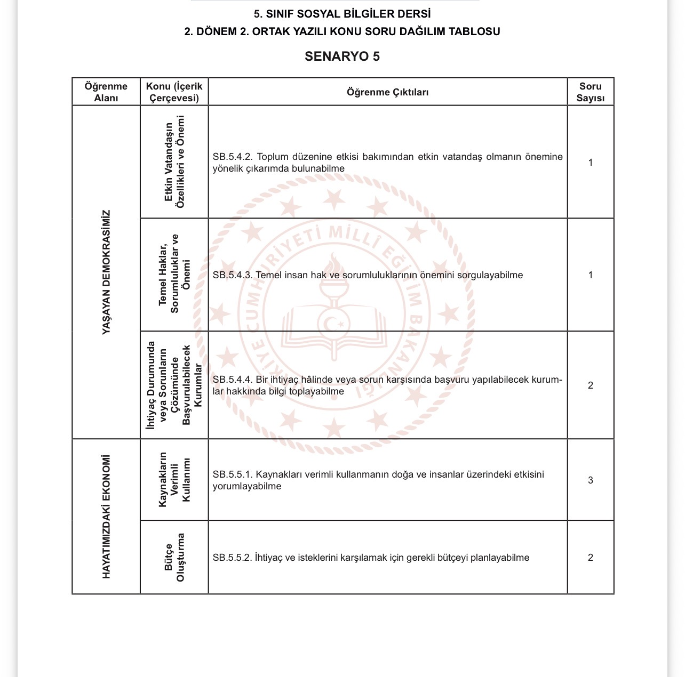

Yazılıya hazırlık sürecinde sizlere yardımcı olacak konu özetleri ve çalışma kağıtları.
Bu bölümde 5. sınıf matematik dersinin temel konularını ele alıyoruz. Doğal sayılar, kesirler ve yüzdeler gibi konularda zorlanıyorsanız aşağıdaki çalışma kağıdı tam size göre. Notları incelerken özellikle problem çözümlerindeki adımlara dikkat etmenizi öneririm. (Not: Buraya konuyla ilgili kendi cümlelerinle en az 3-4 paragraf bilgi yazmalısın ki Google botları bu sayfayı kaliteli bir makale olarak görsün.)
Fen bilimleri dersinin en eğlenceli ünitelerinden biri olan Güneş, Dünya ve Ay sistemi hakkında hazırladığımız çalışma notlarını aşağıdan inceleyebilirsiniz. Gezegenlerin hareketleri ve Ay'ın evreleri sınavlarda sıkça karşımıza çıkar. Aşağıdaki PDF dosyasında bu konuların detaylı özetini bulabilirsiniz...
Sosyal bilgiler dersinde birey ve toplum ünitesine ait harika bir zihin haritası hazırladık. Çocuk hakları, sorumluluklarımız ve rollerimiz hakkında bilmeniz gereken her şey bu görselde özetlenmiştir.

Görseli İndirİngilizce dersinde başarılı olmanın en büyük sırrı kelime dağarcığını geliştirmektir. 5. sınıfın ilk ünitelerinde geçen kelimelerin Türkçe anlamları, örnek cümle kullanımları ve okunuş kurallarını barındıran bu çalışma kağıdı sayesinde yazılılara tam hazır gireceksiniz.
{kind=link}